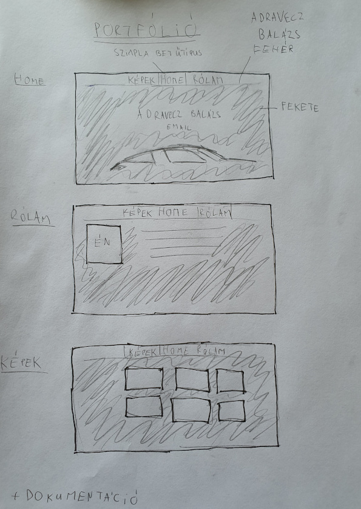

|
Egyszerű, monokromatikus design-t szerettem volna a kezdetektől, egy számomra kedves autónak a sziluettjével a középpontban. Egyszerű, letisztult kinézetet akartam a weboldalnak, egyszerű fejléccel és navigációval. Fontos szempont volt az oldal skálázódása más képernyőarányokhoz. Nehézségek és változások: Számomra a vizuálisan végezhető feladatok sokkal könnyebbek, a kódolásba gyakran bele tudok gabalyodni. Eredetileg a képekre kattintva meg szerettem volna nyitni nagyobban a képet, de sok hibakód után se sikerült ezt megoldanom. Felhasznált weboldalak: https://www.fontspace.com/ https://www.w3schools.com/ |
|  |